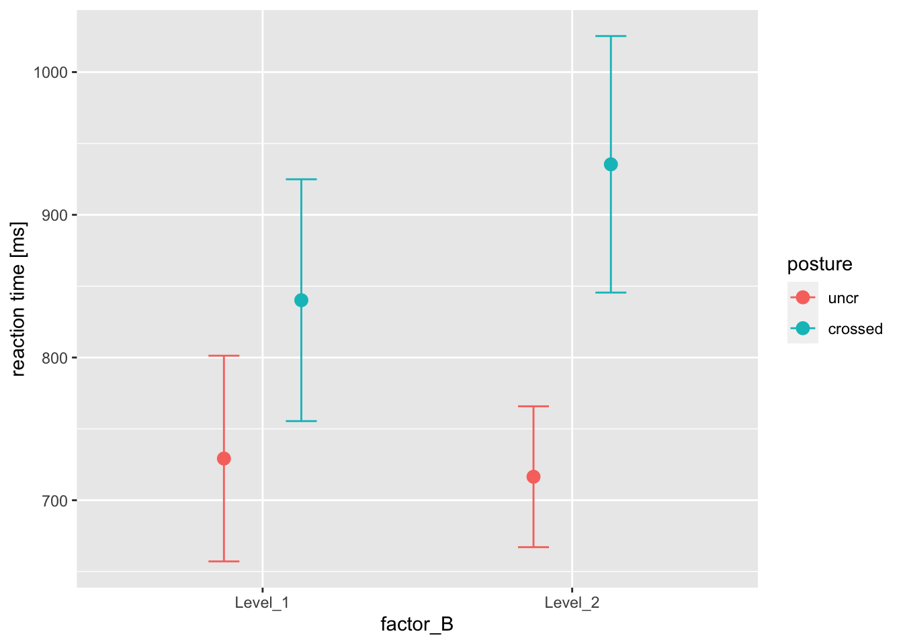

Teil 8 Statistische Analysen
8.1 Vorwort zu statistische Analysen
Bevor wir dezidiert an die Analysen der Antwort- und RT-Daten gehen, hier ein paar allgemeine Informationen vorweg.
8.1.1 Statistische Auswertung von %-Daten (zB korrekt/inkorrekt)
Prozentwerte darf man nicht mit einer Anova analysieren. Details dazu finden sich in: Jaeger, T. F. (2008). Categorical data analysis: Away from ANOVAs (transformation or not) and towards logit mixed models. Journal of Memory and Language, 59(4), 434–446. https://doi.org/10.1016/j.jml.2007.11.007
Stattdessen analysiert man sie mit generalized linear mixed models (GLMM). Diese modellieren die Wahrscheinlichkeit, dass ein Trial korrekt oder inkorrekt beantwortet war. Dies passiert auf Ebene eines einzelnen Trials: Statt Prozentwerte zu berechnen, wie viele Trials richtig waren, beantworten GLMM die Frage, wie wahrscheinlich ein gegebener Trial korrekt oder inkorrekt beantwortet wird, gegeben die Faktorausprägungen des jeweiligen Trials. Dabei ändert also ein Faktor die Wahrscheinlichkeit, dass man richtig oder falsch antwortet; dadurch ändert sich natürlich indirekt auch die Prozentzahl richtiger/falscher Trials.
Im Rahmen von BSc/MSc-Arbeiten sind v.a. folgende Aspekte wichtig:
- Prozentwerte nicht mit Anova auswerten, sondern korrekt mit GLMM; wir nutzen dazu das package afex.
- Dies zieht andere posthoc-Tests nach sich; wir nutzen dazu das package emmeans.
- Ein wesentlicher Punkt bei GLMM für korr/inkorr Daten ist, dass Veränderungen im Bereich nahe 50% (also Zufallsniveau) sehr viel wahrscheinlicher sind als Veränderungen im Beriech 100% (also perfekte Performance). Das heißt, Veränderungen bei GLMM sind nicht linear im Prozentbereich. Stattdessen sind sie linear auf der Skala, die das GLMM benutzt - dies ist eine logit Skala (also, wer sich damit nicht genauer auseinandersetzen will, der muss das auch nicht - aber es hat Konsequenzen füt die Darstellung, s.u.) Die Nichtlinearität auf der Prozent-Skala wirkt sich darin aus, dass error bars nicht mehr symmetrisch sind. Wie kann das sein? Das GLMM schätzt lineare Effekte auf der logit-Skala. Dort gibt es dann auch ganz normale, lineare s.d. und s.e. Aber wenn man diese dann in Prozentwerte transformiert, ist diese Transformation nicht linear. Wie man das macht, findet sich hier im Skript.
8.1.2 Statistische Auswertung von metrischen Daten mit Anovas und linear mixed models
Kontinuierliche oder metrische Daten werden mit einer Anova oder mit einem linear mixed model (LMM) ausgewertet. Dabei ist zu beachten, durch was für eine Art von Design die Daten zustande gekommen sind. Wenn es sich um eine abhängiges, within-subject Design handelt, darf keine “normale”” Anova gerechnet werden, sondern es muss eine repeated-measures Anova (rmAnova) gerechnet werden, die berücksichtigt, dass mehre Daten (z.B. aus unterschiedlichen Bedingungen) von der gleichen Person kommen. In einem solchen Fall besteht auch die Möglichkeit, anstatt einer rmAnova ein LMM zu rechnen. Der Unterschied zwischen einer rmAnova und einem LMM bestehen in den sogenannten random effects, wie random intercepts und random slopes. LMMs “erlauben” Versuchspersonen, ein unterschiedliches Ausgangsniveau (random intercept) und auch unterschiedlich starke Steigungen von Regressionsgeraden zu haben (random slope). An der Terminologie kann man schon erkennen, dass LMMs eher eine Erweiterung von multiplen und gemischten (mehrere Faktoren und kontinuierliche Prädiktoren) Regressionen sind. Insofern ist hier auch der Begriff “Regressionsgerade” etwas weiter zu fassen und eher zu begreifen als ein Koeffizient, der auch die Veränderung zwischen (zwei oder mehr) Faktorabstufungen angibt. LMMs haben gegenüber der rmAnova einige Vorzüge, dazu zählen
- ein besserer Umgang mit fehlenden Datenpunkten
- eine hohe Felxibilität in der Modellformulierung, bei der von sehr einfachen bis komplexen Modellen alles innerhalb des gleichen Frameworks berechnet werden kann
Ein wichtiger Unterschied und auch Vorzug ist auch, dass ein LMM durch die Verwandtschaft zu Regression ein echtes Modell ist, das heißt, dass es Daten fittet und damit Vorhersagen macht. Unterschiedliche Modelle können ebenfalls gegeneinander getestet werden, um herauszufinden, welches Modell angemessener ist.
8.1.3 RTs als metrische Daten
In dem hier behandelten Beispieldatensatz sind Reaktionszeiten (RTs) enthalten. Wir werden sie als metrische Daten fassen und mit einer Anova auswerten. Ob RTs tatsächlich metrische Daten sind oder nicht, ist eine fortlaufende Diskussion und es wurde immer wieder der Einwand gebracht, dass sie transformiert (zum Beispiel log-transformiert) werden sollten, da sie häufig eine schiefe Verteilung haben. Allerdings lässt sich auch zeigen, dass die Transformationen Gefahren bergen und, dass von ihnen eher abgesehen werden sollte. Mehr Informationen findet man in folgendem Artikel:
Schramm, P., & Rouder, J. (2019). Are Reaction Time Transformations Really Beneficial? [Preprint]. https://doi.org/10.31234/osf.io/9ksa6
Wir befürworten daher eher eine Auswertung von Reaktionszeiten, wie sie sind, anstatt einer Transformation.
8.1.4 RTs bei korrekten und inkorrekten Trials
Es ist in der Literatur nicht ganz einheitlich (und kommt wahrscheinlich auf das Design an), ob Reaktionszeiten auf der Grundlage von allen Trials und ungeachtet der Frage analysiert werden, ob die Antwort in dem Trials korrekt war oder nicht. Es gibt aber gute Gründe zu argumentieren, dass ein Fehler etwas anderes ist als eine korrekte Antwort und, dass die Kombination von RTs von korrekten Antworten und Fehlern zwei Verteilungen vermischen würde. Demnach wäre es aussagekräftiger Fehler und korrekte Antworten separat zu analysieren oder sich die RTs halt nur für die korrekten Antworten anzuschauen. Das ist der Ansatz den wir hier verfolgen. Bei der Erstellung des Datensatzes für die Analysen der RTs werden also immer die inkorrekten Antworten ausgeschlossen.
8.2 Die “normale” Anova
Bei dem bestehendem Datensatz bietet sich eine Anova als Auswertung der Verhaltensdaten nicht an, da es sich um ein within-subject Design handelt. Die “normale” Anova wird verwendet, um beispielsweise zu testen, ob sich drei distinkte Gruppen bezüglich einer metrischen Variable unterscheiden. Dass eine VP mehrmals vorkommt, ist nicht erlaubt, da es die Annahme der Unabhängigkeit der Beobachtung verletzt. In diesem Beispiel wird daher analysiert, ob die im Experiment verwendete Körperstellung (welcher Arm oben lag) und das Geschlecht (weiblich/männlich) einen Effekt auf die mittlere Reaktionszeit (gemittelt über alle Bedingungen und SOAs) hat.
8.2.1 Daten vorbereiten
Zunächst generieren wir einen passenden Datensatz. Hierzu muss die Information aus dem Datensatz “bsp_demo” mitverwendent und an den andern Datensatz angehängt werden.
# mittlere Reaktionszeiten der korrekten Antworten berechnen
dAnova <- dc %>% filter(respClean==1) %>% group_by(participant) %>% summarise(n=n(), meanRT=mean(rt))
# Anfangsbuchstaben der Variablennamen klein machen
bsp_demo <- bsp_demo %>% rename_all(tolower)
# Info aus den demographischen Daten hinzufügen
dAnova <- right_join(bsp_demo, dAnova)## Joining, by = "participant"# Variablen korrekt als Faktoren definieren
dAnova$sex <- factor(dAnova$sex)
dAnova$arm_top <- factor(dAnova$arm_top)8.2.2 Der Anova-Befehl und Output
Als nächstes rechnen wir die Anova mit dem Befehl “aov_ez” aus dem afex Paket. und bertrachten den Output.
meanRTs.anova <- aov_ez(id = "participant", dv = "meanRT", data = dAnova, between = c("sex", "arm_top"))## Contrasts set to contr.sum for the following variables: sex, arm_topNun betrachten wir den Output der Anova, den sogenannten Anova-Table:
meanRTs.anova## Anova Table (Type 3 tests)
##
## Response: meanRT
## Effect df MSE F ges p.value
## 1 sex 1, 14 17089.40 2.02 .126 .177
## 2 arm_top 1, 14 17089.40 1.12 .074 .308
## 3 sex:arm_top 1, 14 17089.40 0.00 <.001 .996
## ---
## Signif. codes: 0 '***' 0.001 '**' 0.01 '*' 0.05 '+' 0.1 ' ' 1Wie man der Anova-Tabelle entnehmen kann, hat keiner der beiden Faktoren Geschlecht und Armstellung einen signifikanten Effekt auf die Reaktionszeit. Auch die Interaktion ist nicht signifikant. Im Normalfall ist die Analyse dann an dieser Stelle beendet, da in der Situation eines nicht signifikanten Tests in der Anova, keine direkten Vergleiche mehr angestellt werden. Für den Fall, dass aber einer der Faktoren oder auch die Interaktion signifikant gewesen wäre, hätte man einen post-hoc Test gerechnet, um herauszufinden, welche der Gruppen sich unterscheiden.
8.2.3 Post-hoc Vergleiche
Wir werden aus Demonstrationsgründen hier einfach den post-hoc Test trotzdem rechnen. Dazu verwenden wir den Befehl “emmeans” aus dem gleichnamigen Paket.
Das Paket emmeans ist sehr mächtig, es ist aber auch nicht ganz einfach in der Handhabung. Es lohnt sich für einen vertieften Einstig entweder die Vignette des Pakets unter https://cran.r-project.org/web/packages/emmeans/vignettes/comparisons.html oder diesen Blog https://aosmith.rbind.io/2019/03/25/getting-started-with-emmeans/ zu lesen.
Zunächst schauen wir uns den Haupteffekt von “sex” an:
emmeans(meanRTs.anova, pairwise ~ sex, adjust = "fdr")## NOTE: Results may be misleading due to involvement in interactions## $emmeans
## sex emmean SE df lower.CL upper.CL
## female 765 39.6 14 680 850
## male 856 49.9 14 749 963
##
## Results are averaged over the levels of: arm_top
## Confidence level used: 0.95
##
## $contrasts
## contrast estimate SE df t.ratio p.value
## female - male -90.6 63.7 14 -1.422 0.1768
##
## Results are averaged over the levels of: arm_topNun schauen wir uns die Interaktion von sex und arm_top an. Wenn, wie häufig bei Anova mehr als zwei levels bei einem Faktor vorkommen, dann sollte man unbedingt p-Werte von post-hoc Tests korrigieren. Als Methoden bieten sich Bonferroni oder False Discovery Rate (fdr) an. Diese Methoden lassen sich bei emmeans einfach anwenden indem sie bei dem “adjust”-Parameter definiert werden.
emmeans(meanRTs.anova, pairwise ~ sex:arm_top, adjust = "fdr")## $emmeans
## sex arm_top emmean SE df lower.CL upper.CL
## female left arm on top 799 53.4 14 684 913
## male left arm on top 890 75.5 14 728 1051
## female right arm on top 732 58.5 14 606 857
## male right arm on top 822 65.4 14 682 962
##
## Confidence level used: 0.95
##
## $contrasts
## contrast estimate SE df t.ratio p.value
## female left arm on top - male left arm on top -90.9 92.4 14 -0.984 0.6108
## female left arm on top - female right arm on top 67.0 79.2 14 0.847 0.6108
## female left arm on top - male right arm on top -23.3 84.4 14 -0.276 0.7868
## male left arm on top - female right arm on top 158.0 95.5 14 1.655 0.6108
## male left arm on top - male right arm on top 67.7 99.8 14 0.678 0.6108
## female right arm on top - male right arm on top -90.3 87.7 14 -1.030 0.6108
##
## P value adjustment: fdr method for 6 tests#alternativer code:
#emm.sex_armtop <- emmeans(meanRTs.anova, ~ sex:arm_top)
#contrast(emm.sex_armtop, method = "pairwise", adjust = "fdr")8.3 Die repeated measures Anova
Im Gegensatz zu der “normalen” Anova, ist eine repeated measures anova (rm-Anova) dazu geeignet, um Daten auszuwerten, die mittels eines within-subject-Designs (das heißt mit mehren Messpunkten pro Person; wie bei dem gegebenen Datensatz) gewonnen wurden.
Im Folgenden wird ein Datensatz erstellt, bei dem zunächst die RTs über die SOAs innerhalb jeder Person gemittelt werden. Dann wird der Einfluss von factor_A (gleich/ungleich) und factor_B (gleich/ungleich) und posture (crossed/uncrossed) auf die RTs analysiert.
8.3.1 Daten vorbereiten
Da auch rm-Anova pro Person und Faktorkombination nur einen Wert erwartet, berechnen wir die mittlere Reaktionszeiten der entsprechenden Faktorkombinationen für die Vpn.
drmAnova <- dc %>% filter(respClean==1) %>%
group_by(participant, factor_A, factor_B, posture) %>%
summarise(meanRT=mean(rtClean))## `summarise()` has grouped output by 'participant', 'factor_A', 'factor_B'. You can override using the `.groups` argument.Bei rm-Anova sollte man auch überprüfen, dass es auch keine missing values gibt, weil das problematisch ist. Das heßt, es sollte für jede Faktorkombi pro Person genau ein Wert da sein. Das kann man mit dem Befehl “table” prüfen.
with(drmAnova, table(participant, factor_A, factor_B, posture)) ## , , factor_B = Level_1, posture = uncr
##
## factor_A
## participant Level_1 Level_2
## B006b-08 1 1
## B006b-09 1 1
## B006b-10 1 1
## B006b-11 1 1
## B006b-12 1 1
## B006b-13 1 1
## B006b-14 1 1
## B006b-16 1 1
## B006b-17 1 1
## B006b-18 1 1
## B006b-19 1 1
## B006b-20 1 1
## B006b-21 1 1
## B006b-22 1 1
## B006b-24 1 1
## B006b-25 1 1
## B006b-26 1 1
## B006b-27 1 1
##
## , , factor_B = Level_2, posture = uncr
##
## factor_A
## participant Level_1 Level_2
## B006b-08 1 1
## B006b-09 1 1
## B006b-10 1 1
## B006b-11 1 1
## B006b-12 1 1
## B006b-13 1 1
## B006b-14 1 1
## B006b-16 1 1
## B006b-17 1 1
## B006b-18 1 1
## B006b-19 1 1
## B006b-20 1 1
## B006b-21 1 1
## B006b-22 1 1
## B006b-24 1 1
## B006b-25 1 1
## B006b-26 1 1
## B006b-27 1 1
##
## , , factor_B = Level_1, posture = crossed
##
## factor_A
## participant Level_1 Level_2
## B006b-08 1 1
## B006b-09 1 1
## B006b-10 1 1
## B006b-11 1 1
## B006b-12 1 1
## B006b-13 1 1
## B006b-14 1 1
## B006b-16 1 1
## B006b-17 1 1
## B006b-18 1 1
## B006b-19 1 1
## B006b-20 1 1
## B006b-21 1 1
## B006b-22 1 1
## B006b-24 1 1
## B006b-25 1 1
## B006b-26 1 1
## B006b-27 1 1
##
## , , factor_B = Level_2, posture = crossed
##
## factor_A
## participant Level_1 Level_2
## B006b-08 1 1
## B006b-09 1 1
## B006b-10 1 1
## B006b-11 1 1
## B006b-12 1 1
## B006b-13 1 1
## B006b-14 1 1
## B006b-16 1 1
## B006b-17 1 1
## B006b-18 1 1
## B006b-19 1 1
## B006b-20 1 1
## B006b-21 1 1
## B006b-22 1 1
## B006b-24 1 1
## B006b-25 1 1
## B006b-26 1 1
## B006b-27 1 1Das sieht alles richtig aus.
8.3.2 Anova-Befehl und Output
Der wichtige Unterschied zu vorher ist der “within” Faktor.
meanRTs.rmanova <- aov_ez(id = "participant", dv = "meanRT", data = drmAnova, within = c("factor_A", "factor_B", "posture"))
#Ergebnisse in der Konsole anzeigen lassen
meanRTs.rmanova## Anova Table (Type 3 tests)
##
## Response: meanRT
## Effect df MSE F ges p.value
## 1 factor_A 1, 17 1209.01 0.05 <.001 .826
## 2 factor_B 1, 17 10669.09 5.74 * .019 .028
## 3 posture 1, 17 31739.73 30.85 *** .234 <.001
## 4 factor_A:factor_B 1, 17 1093.64 1.32 <.001 .266
## 5 factor_A:posture 1, 17 561.62 0.00 <.001 .973
## 6 factor_B:posture 1, 17 3091.67 33.92 *** .032 <.001
## 7 factor_A:factor_B:posture 1, 17 563.88 0.59 <.001 .454
## ---
## Signif. codes: 0 '***' 0.001 '**' 0.01 '*' 0.05 '+' 0.1 ' ' 1Wie man in der Anova Tabelle sieht, sind “factor_B,” “posture” und auch die Interaktion aus “faktor_B” und “Posture” signifikant. Die Lage ist also schon ein Stück komplexer geartet.
8.3.3 Plots von estimated marginal means zum Nachvollziehen der Interaktion
Im Folgenden wird ein graphischer Eindruck über die Werte vermittelt und die Interaktion heruntergebrochen. Das Paket emmeans kann uns hierbei wieder weiterhelfen. Es ist nämlich nicht nur dazu da, um post-hoc Tests zu rechnen, sondern auch, um estimated marginal means (EMM) zu berechnen. EMM sind vom Modell geschätzte Werte übder die Randhäufigkeiten (also für Faktoren und Faktorkombinationen).
Beim Herunterbrechen einer Interaktion mittels EMM fängt man normalerweise mit der höchsten signifikanten Kombination an. In diesem Fall ist das die aus factor_B und posture.
emm.factorBXposture <- emmeans(meanRTs.rmanova, ~factor_B:posture)## NOTE: Results may be misleading due to involvement in interactionsprint(emm.factorBXposture)## factor_B posture emmean SE df lower.CL upper.CL
## Level_1 uncr 729 35.9 28.2 656 803
## Level_2 uncr 716 35.9 28.2 643 790
## Level_1 crossed 840 35.9 28.2 767 914
## Level_2 crossed 935 35.9 28.2 862 1009
##
## Results are averaged over the levels of: factor_A
## Warning: EMMs are biased unless design is perfectly balanced
## Confidence level used: 0.95Die EMM kann man auch plotten, um sich einen besseren Überblick zu veschaffen:
ggplot(as.data.frame(emm.factorBXposture),
aes(x=factor_B, y=emmean, color=posture)) +
geom_point(position = position_dodge(width=0.5), size=3) +
geom_errorbar(aes(ymin=lower.CL, ymax=upper.CL), position = position_dodge(width=0.5), width=0.2) +
ylab(label = "reaction time [ms]")
In der Abbildung kann man sehen, dass die Reaktionszeiten insgesamt bei der “crossed” posture höher sind, was den in dem Anova-Table sichtbaren Haupteffekt von “posture” reflektiert. Zudem kann man sehen, dass die Reaktionszeit bei “Level_2” für den factor_B bei “crossed” erhöht ist und bei uncrossed nicht (hier ist die RT sogar etwas niedriger). Dieses Verhältnis spiegelt die signifikante Interaktion wieder.
8.3.4 Post-hoc paarweiser Vergleich für die factor_B x posture Interaktion
Die Interaktion wird nun noch mit post-hoc Tests runtergebrochen, um zu prüfen, welche der Unterschiede signifikant sind.
contrast(emm.factorBXposture, method = "pairwise", adjust = "fdr")## contrast estimate SE df t.ratio p.value
## Level_1 uncr - Level_2 uncr 12.7 19.6 26.1 0.652 0.5201
## Level_1 uncr - Level_1 crossed -111.0 31.1 20.3 -3.567 0.0023
## Level_1 uncr - Level_2 crossed -206.2 34.3 27.3 -6.007 <.0001
## Level_2 uncr - Level_1 crossed -123.7 34.3 27.3 -3.604 0.0019
## Level_2 uncr - Level_2 crossed -218.9 31.1 20.3 -7.038 <.0001
## Level_1 crossed - Level_2 crossed -95.2 19.6 26.1 -4.869 0.0001
##
## Results are averaged over the levels of: factor_A
## P value adjustment: fdr method for 6 testsWie man in der Tabelle sehen kann, sind also alle Vergleiche zwischen den Stufen signifikant mit Ausnahme des Vergleiches zwischen “Level_1”” und “Level_2”” bei “uncrossed.” Somit lassen sich sowohl der Haupteffekt wie auch die Interaktion mittels der post-hoc Vergleiche nachvollziehen.
8.4 Das linear mixed model (LMM)
Zuletzt wird noch das LMM vorgestellt, das sich auch gut eignet, um metrische repeated measures Daten zu analysieren. Trotz der mathematischen Unterschiede zu einer rm-Anova, lässt sich der Output recht ähnlich interpretieren.
Ein Unterschied ist, dass LMMs in der Regel auf allen Daten beruhen und man nicht vorher, wie oben, über bestimmte Levels aggregiert (Mittelwerte gebildet) werden müssen. Hier werden wir also einfach alle SOAs und alle Wiederholungen der Trials des gleichen Typs “reinfüttern.” In der Anwendung ist ein Unterschied, dass das LMM mit dem afex-Befehl “mixed” angesprochen wird und, dass man die Faktorstruktur über eine Formel angibt.
Sie können in dem Befehl unten (im nächsten Abschnitt) sehen, dass einige Parameter gesetzt werden, die Sie noch nicht kennen.
Das eine ist der sogenannte random effect. Hier haben wir ihn definiert als “(1|participant).” Diese Art von random effect nennt man einen random intercept für den Faktor Versuchsperson. Kurz ausgedrückt bedeutet das, dass das Modell berücksichtigt, dass die Versuchspersonen einen eigenen Ausgangspunkt haben. Das ist die minimale Annahme, die wir für ein LMM machen können. Die korrekte Formulierung der random effects ist eine der größeren Kontroversen zu dieser Art von Modellen.
Diese Kontroverse ist z.B. in folgendem Artikel behandelt: Barr, D. J., Levy, R., Scheepers, C., & Tily, H. J. (2013). Random effects structure for confirmatory hypothesis testing: Keep it maximal. Journal of Memory and Language, 68(3), 255–278. https://doi.org/10.1016/j.jml.2012.11.001
Der andere Parameter, der für Sie neu sein dürfte ist “method.” Hier wird eine von mehreren zur Verfügugn stehenden Methoden für die Schätzung der Freiheitsgrade definiert. Es gibt:
- Kenward-Rogers “KR”: langsam
- Satterthwaite “S”: etwas schneller
- Asymptotic: das schnellste, schätzt df auf Inf
Wir nehmen hier “S.”
8.4.1 Daten vorbereiten
Wie oben beschreiben, wird nicht aggregiert, wir sortieren aber wieder die falschen Antworten raus.
dLMM <- dc %>% filter(respClean==1)8.4.2 Mixed-Befehl und Output
meanRTs.lmm <- mixed(rtClean~factor_A*factor_B*posture + (1|participant), data = dLMM, method = "S") ## Contrasts set to contr.sum for the following variables: factor_A, factor_B, posture, participant## Fitting one lmer() model. [DONE]
## Calculating p-values. [DONE]Den Output schaut man wie zuvor an:
meanRTs.lmm## Mixed Model Anova Table (Type 3 tests, S-method)
##
## Model: rtClean ~ factor_A * factor_B * posture + (1 | participant)
## Data: dLMM
## Effect df F p.value
## 1 factor_A 1, 24290.02 0.58 .444
## 2 factor_B 1, 24290.20 191.66 *** <.001
## 3 posture 1, 24290.37 2827.75 *** <.001
## 4 factor_A:factor_B 1, 24290.01 5.52 * .019
## 5 factor_A:posture 1, 24290.01 0.03 .858
## 6 factor_B:posture 1, 24290.07 330.74 *** <.001
## 7 factor_A:factor_B:posture 1, 24290.01 1.93 .165
## ---
## Signif. codes: 0 '***' 0.001 '**' 0.01 '*' 0.05 '+' 0.1 ' ' 1Auch beim LMM bekommt man einen Anova-Table. Der Output lässt sich genau so interpretieren, wie bei der Anova. Auch hier bekommen wir gezeigt, dass es einen signifikanten Haupteffekt von “factor_B” und “posture” gibt. Und eine Interaktion aus “factor_B” und “posture,” wie bei der rmAnova. Einziger Unterschied ist hier, dass das LMM auch noch eine (gerade so) signifikante Interaktion zwischen “factor_A” und “factor_B” anzeigt. Der folgende Plot soll aufzeigen, was es mit den Interaktionen auf sich hat.
8.4.3 Plots von EMM für die factor_B x posture Interaktion
Wir beginnen zunächst wieder mit der Interaktiion aus “factor_B” und “posture,” die wir schon aus der rm-Anova kennen.
Bevor wir die emms berechnen, sagen wir R noch, welche Methoden verwendet werden sollen, um die Freiheitsgrade zu schätzen. Das Paket emmeans kann mehrere verwenden, die sich mathematisch unterscheiden und teilweise sehr unterschiedlich lange Berechnungsdauern haben (ähnlich wie oben). Wir wählen die Methode, die “asymptotic” heißt.
#options für df schätzung bei post hoc tests
emm_options(lmer.df = "asymptotic") # options: 'satterthwaite', 'kenward-roger', 'asymptotic'
#Wenn Sie 'satterthwaite' verwenden wollen, müssen Sie das Limit an Tests hochsetzen
#emm_options(lmerTest.limit = 30000)emm.lmm.factorBXPosture <- emmeans(meanRTs.lmm, ~factor_B:posture)## NOTE: Results may be misleading due to involvement in interactionsggplot(as.data.frame(emm.lmm.factorBXPosture),
aes(x=factor_B, y=emmean, color=posture)) +
geom_point(position = position_dodge(width=0.5), size=3) +
geom_errorbar(aes(ymin=asymp.LCL, ymax=asymp.UCL),
position = position_dodge(width=0.5), width=0.2) +
ylab(label = "reaction time [ms]")Das sieht im Wesentlichen aus wie oben bei der rmAnova.
8.4.4 Post-hoc paarweiser Vergleich für die factor_B x posture Interaktion
Das Vorgehen ist identisch wie bei der rm-Anova:
contrast(emm.lmm.factorBXPosture, method = "pairwise", adjust = "fdr")## contrast estimate SE df z.ratio p.value
## Level_1 uncr - Level_2 uncr 13.6 4.33 Inf 3.138 0.0017
## Level_1 uncr - Level_1 crossed -109.9 4.37 Inf -25.126 <.0001
## Level_1 uncr - Level_2 crossed -210.3 4.49 Inf -46.884 <.0001
## Level_2 uncr - Level_1 crossed -123.5 4.39 Inf -28.142 <.0001
## Level_2 uncr - Level_2 crossed -223.9 4.50 Inf -49.779 <.0001
## Level_1 crossed - Level_2 crossed -100.4 4.53 Inf -22.152 <.0001
##
## Results are averaged over the levels of: factor_A
## Degrees-of-freedom method: asymptotic
## P value adjustment: fdr method for 6 testsAuch die Vergleiche fallen von der Interpretation her ähnlich aus wie oben bei der rmAnova. Es fällt aber ins Augem, dass auch der erste Vergleich zwischen Level_1 und Level_2 bei uncrossed signifikant wird. Man sieht auch, dass wir uns auch bei anderen Vergleichen durch das LMM etwas “sicherer” sein können, denn die p-Werte sind niedriger. Hier drückt sich die etwas höhere Power des LMM aus, das alle Trials mit einbezieht (die rmAnova war ja auf der Basis von Mittelwerten berechnet worden).
8.4.5 Plots von EMM für die factor_B x factor_A Interaktion
Im Folgenden soll noch einmal die Abhängigkeit von “factor_A”von “factor_B” verdeutlicht werden (das war die “gerade so” signifikante Interaktion, die die rmAnova nicht zeigte).
emm.lmm.factorAXfactorB <- emmeans(meanRTs.lmm, ~factor_A:factor_B)## NOTE: Results may be misleading due to involvement in interactionsggplot(as.data.frame(emm.lmm.factorAXfactorB),
aes(x=factor_B, y=emmean, shape=factor_A)) +
geom_point(position = position_dodge(width=0.5), size=3) +
geom_errorbar(aes(ymin=asymp.LCL, ymax=asymp.UCL),
position = position_dodge(width=0.5), width=0.2) +
ylab(label = "reaction time [ms]")Man sieht ein bisschen, dass sich die Stufen von “factor_A” über “factor_B” in leicht unterschiedliche Richtungen bewegen, also eine leichte Interaktion vorhanden ist. Auch hier kann man wieder einen post-hoc-Test rechnen.
8.4.6 Post-hoc paarweiser Vergleich für die factor_B x factor_A Interaktion
Das Vorgehen ist wiederum analog zu oben.
contrast(emm.lmm.factorAXfactorB, method = "pairwise", adjust = "fdr")## contrast estimate SE df z.ratio p.value
## Level_1 Level_1 - Level_2 Level_1 4.97 4.37 Inf 1.136 0.2559
## Level_1 Level_1 - Level_1 Level_2 -36.05 4.43 Inf -8.144 <.0001
## Level_1 Level_1 - Level_2 Level_2 -45.81 4.43 Inf -10.332 <.0001
## Level_2 Level_1 - Level_1 Level_2 -41.02 4.43 Inf -9.252 <.0001
## Level_2 Level_1 - Level_2 Level_2 -50.78 4.44 Inf -11.435 <.0001
## Level_1 Level_2 - Level_2 Level_2 -9.76 4.49 Inf -2.172 0.0358
##
## Results are averaged over the levels of: posture
## Degrees-of-freedom method: asymptotic
## P value adjustment: fdr method for 6 tests8.5 Das generalized linear mixed model (GLMM)
Das GLMM ist in der Anwendung sehr ähnliich wie das LMM, ist aber, wie oben beschrieben, dazu da, um diskrete (z.B. ja/nein)-Antworten auszuwerten. In der Anwendung ist der wesentliche Unterschied im Code zu dem LMM, dass wir hier einen Parameter setzen: family=“binomial.” Das sagt dem “mixed”-Befehl, dass es sich um ein GLMM handelt mit einer binären AV. Zusätzlich müssen wir auch eine Methode wählen, um die p-Werte zu schäzten. Hier hat man die Wahl zwischen:
- Parametric Bootstrap (“PB”): das ist eine sichere Wahl, die eine gute Schätzung liefert für unterschiedlichste Modelle bzw. Faktorstrukturen. Der Nachteil ist, dass die Schätzung je nach Modell sehr lange dauern kann (tw. mehrere Stunden).
- Likelihood-Ratio-Test (“LRT”): Dieses Verfahren geht deutlich schneller, aber die Schätzungen können ungenau werden, wenn eine einfache random effect struktur gewählt wurde (siehe ?mixed für Informationen) dazu.
Da GLMMs besonder bei “PB” eine deutlich längere Berechnungsdauer als andere Modelle haben, lohnt es sich mehrere Prozessoren gleichzeitig zu nuten und es macht unter diesen Umständen Sinn, die Ergebnisse abzuspeichern, damit man das Modell nicht erneut berechnen musss, wenn man die R-Session neu startet.
8.5.1 Der GLMM-Befehl und Output
Wir zeigen hier ein Beispiel, wie das fitten mit mehreren Prozessorkernen und das abspeichern der Daten geht:
library( parallel ) #für Multicore-Prozesse
nc <- detectCores() - 1 # Anzahl an Prozessoren minus 1
# Um zu sehen, was der Prozess macht, wird Output in eine Textdatei geschrieben.
cl <- makeCluster(rep("localhost", nc), outfile = "cl1.log.txt")
startTime <- Sys.time() #Anfangszeit, um zu sehen, wie lange das Modell läuft
resp.glmm <- mixed( respClean ~ posture * factor_A * factor_B + ( 1 | participant ),
data = dc, family = "binomial", method = "PB",
args_test=list(nsim = 500), check_contrasts = TRUE, cl = cl ) # family =
endTime <- Sys.time() #Endzeit für den Vergleich mit der Anfangszeit
( endTime- startTime )
#Modellergebnisse abspeichern
save(resp.glmm, file = "resp_glmm.RData")Hier wählen wir noch einen Ansatz mit der “LRT”-Methode:
resp.glmm <- mixed( respClean ~ posture * factor_A * factor_B + ( 1 | participant ),
data = dc, family = "binomial", method = "LRT",
check_contrasts = TRUE ) ## Contrasts set to contr.sum for the following variables: posture, factor_A, factor_B, participant## Fitting 8 (g)lmer() models:
## [........]Als nächstes schauen wir den Output (Anova Table) an:
resp.glmm## Mixed Model Anova Table (Type 3 tests, LRT-method)
##
## Model: respClean ~ posture * factor_A * factor_B + (1 | participant)
## Data: dc
## Df full model: 9
## Effect df Chisq p.value
## 1 posture 1 649.80 *** <.001
## 2 factor_A 1 1.63 .201
## 3 factor_B 1 150.84 *** <.001
## 4 posture:factor_A 1 0.02 .876
## 5 posture:factor_B 1 14.56 *** <.001
## 6 factor_A:factor_B 1 0.31 .576
## 7 posture:factor_A:factor_B 1 1.94 .164
## ---
## Signif. codes: 0 '***' 0.001 '**' 0.01 '*' 0.05 '+' 0.1 ' ' 1So ähnlich wie bei den RTs sehen wir auch hier einen Haupteffekt von “posture” und “factor_B,” sowie eine signifikante Interaktion “posture:factor_B.”
8.5.2 EMM für das GLMM
Auch hier kann man diese Interaktion am besten mit einem Plot und post-hoc Tests nachvollziehen.
Grundsätzlich geht das ähnlich wie bei dem LMM, aber es gibt einen Unterschied: das GLMM hat die Daten auf eine logit-Skala transformiert, die etwas kompliziert ist nachzuvollziehen. Wir können aber in “emmeans” definieren, dass wir die Daten wieder auf die Einheit der Antwort (also zwischen 0 und 1) zurücktransformieren wollen. Als Resultat bekommen wird Werte, die Schätzungen für den Anteil korrekter Antworten (den Wert 1 in unserer Variable) in den Faktorkombinationen sind. Dazu defnieren wir in “emmeans” einfach das Argument: type=“response.”
emm.resp.glmm <- emmeans(resp.glmm, ~posture:factor_B, type = "response")## NOTE: Results may be misleading due to involvement in interactionsprint(emm.resp.glmm)## posture factor_B prob SE df asymp.LCL asymp.UCL
## uncr Level_1 0.985 0.00389 Inf 0.975 0.991
## crossed Level_1 0.952 0.01168 Inf 0.923 0.971
## uncr Level_2 0.976 0.00618 Inf 0.960 0.985
## crossed Level_2 0.884 0.02609 Inf 0.822 0.926
##
## Results are averaged over the levels of: factor_A
## Confidence level used: 0.95
## Intervals are back-transformed from the logit scale8.5.3 Plot der EMM aus dem GLMM
ggplot(as.data.frame(emm.resp.glmm),
aes(x=factor_B, y=prob, color=posture)) +
geom_point(position = position_dodge(width=0.5), size=3) +
geom_errorbar(aes(ymin=asymp.LCL, ymax=asymp.UCL),
position = position_dodge(width=0.5), width=0.2) +
ylab(label = "proportion of correct response")Figure 8.1: EMM für die Interaktion im GLMM
8.5.4 Post-hoc paarweise Vergleeiche für die Interaktion im GLMM
Für die paarweisen Vergleiche kann man identisch vorgehen wie zuvor:
contrast(emm.resp.glmm, method = "pairwise", adjust = "fdr")## contrast odds.ratio SE df z.ratio p.value
## uncr Level_1 / crossed Level_1 3.310 0.3135 Inf 12.636 <.0001
## uncr Level_1 / uncr Level_2 1.646 0.1706 Inf 4.808 <.0001
## uncr Level_1 / crossed Level_2 8.670 0.7727 Inf 24.236 <.0001
## crossed Level_1 / uncr Level_2 0.497 0.0407 Inf -8.533 <.0001
## crossed Level_1 / crossed Level_2 2.619 0.1618 Inf 15.591 <.0001
## uncr Level_2 / crossed Level_2 5.268 0.3961 Inf 22.096 <.0001
##
## Results are averaged over the levels of: factor_A
## P value adjustment: fdr method for 6 tests
## Tests are performed on the log odds ratio scaleDas einzige, was hier neu ist, ist die Teststatistik “odds.ratio.” Eine odds ratio ist das Verhältnis von zwei Wahrscheinlichkeiten. Eine korrekte Antwort ist also bei uncr Level_1 3.3 mal wahrscheinlicher als bei crossed Level_1 und das ist statistisch signifikant.